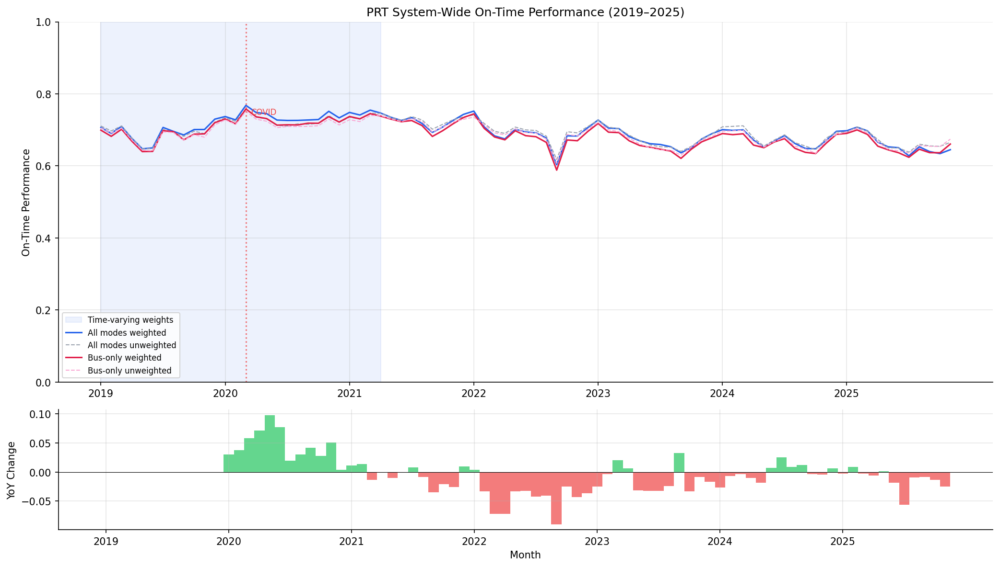

Analysis
01 - System-Wide OTP Trend
Core OTP Patterns
Coverage: 2016-11 to 2025-11 (from otp_monthly, scheduled_trips_monthly).
Built 2026-03-20 19:26 UTC · Commit 174c909
Page Navigation
Analysis Navigation
Data Provenance
flowchart LR
01_system_trend(["01 - System-Wide OTP Trend"])
t_otp_monthly[("otp_monthly")] --> 01_system_trend
01_data_ingestion[["Data Ingestion"]] --> t_otp_monthly
t_route_stops[("route_stops")] --> 01_system_trend
01_data_ingestion[["Data Ingestion"]] --> t_route_stops
t_routes[("routes")] --> 01_system_trend
01_data_ingestion[["Data Ingestion"]] --> t_routes
t_scheduled_trips_monthly[("scheduled_trips_monthly")] --> 01_system_trend
02_scheduled_trips[["Scheduled Trips ETL"]] --> t_scheduled_trips_monthly
d1_01_system_trend(("polars (lib)")) --> 01_system_trend
classDef page fill:#dbeafe,stroke:#1d4ed8,color:#1e3a8a,stroke-width:2px;
classDef table fill:#ecfeff,stroke:#0e7490,color:#164e63;
classDef dep fill:#fff7ed,stroke:#c2410c,color:#7c2d12,stroke-dasharray: 4 2;
classDef file fill:#eef2ff,stroke:#6366f1,color:#3730a3;
classDef api fill:#f0fdf4,stroke:#16a34a,color:#14532d;
classDef pipeline fill:#f5f3ff,stroke:#7c3aed,color:#4c1d95;
class 01_system_trend page;
class t_otp_monthly,t_route_stops,t_routes,t_scheduled_trips_monthly table;
class d1_01_system_trend dep;
class 01_data_ingestion,02_scheduled_trips pipeline;
Findings
Findings: System-Wide OTP Trend
Summary
PRT on-time performance has declined over the 2019--2025 window and has not recovered to pre-COVID levels. A bus-only stratification confirms the decline is not an artifact of mixing modes -- bus trends closely track the all-mode average.
Key Numbers
- 2019 baseline: ~69% all-mode weighted OTP, ~68% bus-only weighted OTP (93 routes reporting)
- COVID spike: 77% all-mode in March 2020 (low ridership improved adherence)
- Post-COVID trough: 60% all-mode weighted in September 2022
- Current level: 63--65% all-mode / 64--66% bus-only weighted OTP (late 2025)
Observations
- The unweighted and weighted averages now track very closely (~0.1 pp gap on average). The previous ~2-3 pp gap was an artifact of using SUM(trips_7d) across stops, which conflated trip frequency with route length and over-weighted long routes.
- The bus-only trend closely tracks the all-mode trend (gap averages ~0.5 pp), because bus routes (90+ of ~93 reporting) overwhelmingly dominate the system average. Rail's higher OTP lifts the all-mode average only slightly.
- Year-over-year change was consistently negative from mid-2021 through late 2022, then stabilized near zero -- the system stopped declining but hasn't improved.
- Route count ranges from 68 to 96 across months. Most months have 93--96 routes, but Nov 2020 is a low outlier at 68 and mid-2025 months drop to 77--79. This varying composition does not affect the per-month averaging directly (each month averages whichever routes reported), but it means the set of routes being averaged is not fixed across time.
- For Jan 2019 -- Mar 2021 (27 months), weights come from WPRDC time-varying scheduled trip counts. For Apr 2021 onward (56 months), weights fall back to static MAX(trips_7d)/7 from route_stops.
Caveats
- Time-varying weights are only available through Mar 2021. The static fallback for later months (MAX trips_7d / 7) is a single snapshot, not historical. If route frequency changed significantly after Mar 2021, the weighting for those months may not perfectly reflect actual service levels.
- The OTP definition ("on-time") is not specified in the source data -- the threshold could be 1 minute, 5 minutes, or something else.
- Five routes (37, 42, P2, RLSH, SWL) have zero weight because they appear in neither
scheduled_trips_monthlynorroute_stops. These routes still contribute to the unweighted average.
Discussion
The central finding -- that PRT OTP declined from ~69% to ~60% and has stabilized around 63--65% without recovering -- is robust to the weighting methodology change. The overall trend shape (pre-COVID baseline, COVID spike, sustained decline, plateau) is visible in both weighted and unweighted series.
The collapse of the weighted-unweighted gap from ~2-3 pp to ~0.1 pp is itself a notable finding. The previous gap was interpreted as evidence that "high-frequency routes perform worse than low-frequency ones." This was wrong: it was an artifact of the SUM-across-stops weight, which inflated the weights of routes with many stops (i.e., long routes), not high-frequency routes. Once weights correctly reflect trip frequency (via WPRDC scheduled counts or MAX-based proxy), the weighted and unweighted averages converge, meaning route frequency does not systematically predict OTP at the system level. This is consistent with the null result from Analysis 10 (cross-sectional) and Analysis 30 (longitudinal panel).
The time-varying weights for the first 27 months (Jan 2019 -- Mar 2021) capture real service changes, including the COVID-era cuts that reduced weekday trips by 31% between March and April 2020. This means the weighted OTP for 2020--2021 reflects actual service levels rather than retroactively applying today's schedule. The static fallback for later months remains a limitation -- if PRT restructured service significantly after March 2021, those changes are not captured. Extending the WPRDC data or obtaining historical GTFS archives would close this gap.
The bus-only stratification confirms that system trends are driven by bus performance. Rail's higher OTP (~84%) lifts the all-mode average by only ~0.5 pp because bus routes represent >96% of the reporting routes. Any policy intervention to improve system OTP must focus on bus operations.
Methodology Change (2026-02-15)
Replaced static SUM(trips_7d) weighting with time-varying daily_trips from WPRDC scheduled trip counts (Jan 2019 -- Mar 2021) and MAX(trips_7d)/7 static fallback for later months. This fixes Methodology Issues #1 (SUM conflation with route length) and #2 (static weights across 7 years). The weighted-unweighted gap collapsed from ~2-3 pp to ~0.1 pp, confirming the old gap was an artifact of the SUM-based weight inflation, not a genuine high-frequency penalty.
Review History
- 2026-02-11: RED-TEAM-REPORTS/2026-02-11-analyses-01-05-07-11.md -- 5 issues (1 significant). Added bus-only trend line, fixed METHODS.md data section, documented route count variability (68--96), corrected "stable at 93" claim, and documented excluded routes.
- 2026-02-15: Fixed Methodology Issues #1 and #2. Switched to time-varying WPRDC trip weights for overlap period, MAX-based static fallback for remaining months.
Output

time series chart with all-mode and bus-only overlays; shaded region marks time-varying weight period.
No interactive outputs declared.
monthly weighted and unweighted OTP (all modes), with pct_time_varying column.
Preview CSV
monthly weighted and unweighted OTP (bus only).
Preview CSV
Methods
Methods: System-Wide OTP Trend
Question
Is PRT on-time performance improving, declining, or stable over the 2019--2025 period?
Approach
- Compute a monthly system-wide OTP by averaging across all routes, weighted by daily trip counts so high-frequency routes count more.
- Time-varying weights (Jan 2019 -- Mar 2021): Use
daily_tripsfromscheduled_trips_monthly(WEEKDAY day type), sourced from WPRDC monthly schedule data. This provides month-specific service levels per route. - Static fallback (Apr 2021 -- Nov 2025): Use
MAX(trips_7d) / 7fromroute_stopsas an approximate daily trip count per route. MAX avoids the SUM-across-stops conflation with route length (Methodology Issue #1). - Also compute an unweighted mean for comparison.
- Stratify by mode: compute a separate bus-only weighted and unweighted trend to isolate bus performance from structurally higher-performing rail routes.
- Plot all four series (all-mode weighted/unweighted, bus-only weighted/unweighted) as time series to identify trends, seasonal patterns, and the COVID-era shift. The time-varying weight region is shaded on the chart.
- Compute year-over-year change to quantify the direction.
Data
| Name | Description | Source |
|---|---|---|
otp_monthly |
Monthly OTP per route | prt.db table |
scheduled_trips_monthly |
WPRDC time-varying daily trip counts per route per month (WEEKDAY), Nov 2016 -- Mar 2021 | prt.db table |
route_stops |
Static trip counts for fallback weighting (Apr 2021 onward) | prt.db table |
routes |
Mode classification (used to compute bus-only trends) | prt.db table |
Output
output/system_trend.csv-- monthly weighted and unweighted OTP (all modes), with pct_time_varying columnoutput/system_trend_bus_only.csv-- monthly weighted and unweighted OTP (bus only)output/system_trend.png-- time series chart with all-mode and bus-only overlays; shaded region marks time-varying weight period
Sources
| Name | Type | Why It Matters | Owner | Freshness | Caveat |
|---|---|---|---|---|---|
| otp_monthly | table | Primary analytical table used in this page's computations. | Produced by Data Ingestion. | Updated when the producing pipeline step is rerun. | Coverage depends on upstream source availability and ETL assumptions. |
| route_stops | table | Primary analytical table used in this page's computations. | Produced by Data Ingestion. | Updated when the producing pipeline step is rerun. | Coverage depends on upstream source availability and ETL assumptions. |
| routes | table | Primary analytical table used in this page's computations. | Produced by Data Ingestion. | Updated when the producing pipeline step is rerun. | Coverage depends on upstream source availability and ETL assumptions. |
| scheduled_trips_monthly | table | Primary analytical table used in this page's computations. | Produced by Scheduled Trips ETL. | Updated when the producing pipeline step is rerun. | Coverage depends on upstream source availability and ETL assumptions. |
| polars | dependency | Runtime dependency required for this page's pipeline or analysis code. | Open-source Python ecosystem maintainers. | Version pinned by project environment until dependency updates are applied. | Library updates may change behavior or defaults. |